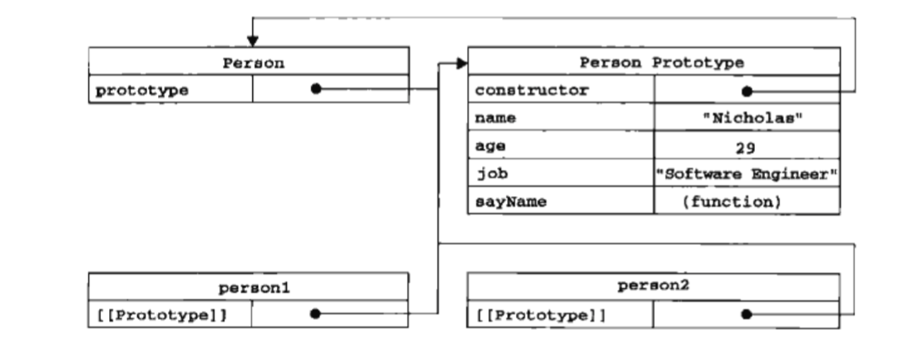

工厂模式
所谓的工厂模式就是，把创建具体对象的过程抽象成了一个函数，每次调用这个函数都会返回一个相似的对象。
工厂模式虽然解决了创建多个相似对象的问题，但却没有解决对象识别的问题（即怎样知道一个对象的类型）。
构造函数模式
js里经常如此写var obj=new Object();var arr=new Array();，Object和Array就是构造函数，使用new操作符可以创建相应类型的对象，使用instanceof可以验证对象的类型，例如：alert(arr instance Array); //true
构造函数模式就是，自定义像Array和Object等这样的构造函数，并使用new操作符调用它来创建自定义类型对象的方法。
例如：
- new操作符
使用new操作符调用，Person就是一个构造函数
要创建Person的新实例，必须使用new操作符。以这种方式调用构造函数实际上会经历一下4个步骤：
（1）创建一个新对象
（2）将构造函数的作用域赋给新对象，即把构造函数的this指向这个新对象
（3）执行构造函数中的代码（为这个新对象添加属性）
（4）返回新对象
如果不使用new，Person就是一个普通的函数，可以正常调用。例如：
- 检测类型
alert(person1 instanceof Object); //truealert(person1 instanceof Person);//true
综上，创建自定义的构造函数，意味着将来可以将它的实例标识为一种特定的类型（类似于Array类型，Number类型）；而这正是构造函数模式胜过工厂模式的地方。但是构造函数模式也存在缺点。
- 构造函数模式的问题
使用构造函数的主要问题就是，每个方法都要在每个实例上重新创建一遍（实例化一次Function对象），浪费内存。例如，person1和person2都有一个sayName()的方法，但创建person1和person2时候，定义sayName这个方法时都实例化了一个函数对象，因此person1.sayName和person2.sayName是不相等的，而事实上它们又是做的同样的事情。或者也可以这么说，person1和person2的sayName()方法做同样的事情，但却在创建对象时被实例化了两次，也就占用了两倍内存。
虽然可以解决，但并不完美，例如：1234567891011121314function Person(name, age, job){this.name = name;this.age = age;this.job = job;this.sayName = sayName;}function sayName(){alert(this.name);}var person1 = new Person("Nicholas", 29, "Software Engineer");var person2 = new Person("Greg", 27, "Doctor”);alert(person1.sayName == person2.sayName); //true
但是如果共享方法有很多，就需要定义很多个全局函数，那么我们的自定义的引用类型就丝毫没有封装性可言了。好在，这些问题可以通过使用原型模式解决。
原型模式
理解原型对象
无论什么时候，只要创建了一个新函数，就会根据一组特定的规则为该函数创建一个prototype属性，这个属性就是该函数的原型对象。每个函数都有一个原型对象，所有原型对象都会自动获得constructor属性，constructor指向该函数（拥有该prototype属性的函数）。
例如，Person.prototype.constructor指向Person。
创建构造函数后，其原型对象默认只会取得constructor属性；至于其他的方法都是从Object继承来的（__proto__）。当调用构造函数创建一个新实例后，该实例内部将包含一个指针（__proto__），指向构造函数的原型对象。（ECMA-262第5版中管这个指针叫[[Prototype]],但在脚本中没有标准的方式访问它。在chrome，safari和firefox中都支持一个属性__proto__，但在其他实现中__proto__对脚本是不可见的）。所以和实例有直接关系的是构造函数的原型对象，而不是构造函数。

上图展示了Person构造函数、Person的原型对象和Person现有的两个实例之间的关系。
实例属性和原型属性：
原型属性即构造函数的原型对象的属性；实例属性即在实例对象上直接添加的属性。
例如：person1.name=“Jone”。
通过点运算符可以访问到实例的实例属性和原型属性。实例访问属性时，脚本会先搜索实例属性，如果找到了，则停止搜索返回实例属性的值；如果没找到就继续搜索原型属性。所以如果实例属性和原型属性同名，那么原型属性就会被屏蔽掉，无法访问到。
需要注意的是：实例无法修改他的原型属性的值，也无法修改原型对象（即不能修改、删除和增加一个原型属性）
（注意：实例不能修改的是原型属性的值，但是如果原型属性指向一个引用类型，原型属性的值是存储这个引用类型的地址，即不能修改原型属性指向另一个对象，但却能修改原型属性指向的对象里的属性。下面原型对象的问题里还会再讲到）。
如果person1.name=“Jone”这样写，脚本只会在实例属性里创建或修改一个name=“Jone”的属性，delete person1.name只会删除person1的实例属性name（就算实例没有name的实例属性，也不会删除实例的原型属性）。
和原型对象有关的几个方法
isPrototypeOf()
alert(Person.prototype.isPrototypeOf(person1)); //true
如果person1的[[prototype]]（即__proto__）指向调用isPrototypeOf的对象即Person.prototype就会返回true。
即判断Person.prototype是否是person1的[[prototype]]Object.getPrototypeOf()
alert(Object.getPrototypeOf(person1)==Person.prototype); //true
返回person1这个对象的原型[[prototype]]hasOwnProperty()
person1.hasOwnProperty(“name”);如果person1.name是来自于person1的实例属性，返回true；如果来自于person1的原型属性，则返回false。
原型与in操作符
有两种方式使用in操作符：
单独使用in：alert(“name” in person1); //true
在通过person1能够访问给定属性是返回true，无论属性是实例属性还是原型属性。
在for-in循环中使用：返回的是所有能够通过对象访问的、可枚举的属性，其中包括实例属性也包括原型属性。
- Object.keys()
接受一个对象作为参数，返回一个包含对象的所有可枚举属性的字符串数组。
如果对象是一个实例，则只返回实例的实例属性而不包含原型属性 - Object.getOwnPropertyNames()12var keys = Object.getOwnPropertyNames(Person.prototype);alert(keys); //"constructor,name,age,job,sayName”
得到对象的所有实例属性，无论它是否可枚举
更简单的原型语法
所谓的更简单的原型写法就是用字面量的形式来定义构造函数的原型对象，如下：
这样定义完了之后，Person.prototype这个对象就被重写了，导致它的constructor这个属性的指向变成了Object,而不是Person
(解释：Person.prototype是Object的一个实例，所以它有一个原型属性constructor指向Object。Person被创建时，它的原型对象Person.prototype自动获得了一个constructor的属性，指向Person，这个属性是对象的实例的实例属性，所以会屏蔽掉对象的原型属性，所以说Person.prototype.constructor是指向Person的。但是用字面量重写了Person.prototype后，Person.prototype仍是Object的一个实例，所以它有一个原型属性constructor指向Object，但它没有了指向Person的实例属性constructor，所以在访问Person.prototype.constructor时，就是访问了Person.prototype对象的原型属性，指向了Object)。
但我们可以再把它定义进这个对象字面量里手动指向Person，即给Person.prototype这个对象的实例加一个实例属性constructor，指向Person。如下：
我们知道如此定义对象，对象的属性的[[enumerable]]特性默认是true。而默认情况下，原声的原型对象的constructor属性是不可枚举的，因此如果你使用兼容ES5的javaScript引擎，可以使用Object.defineProperty()来设置constructor属性。如下：
原型的动态性
简单点来说，就是实例的[[prototype]]是指向构造函数的原型对象，而不是构造函数。只要你明白这一点，原型的动态性就好理解了。
第一种情况：Person.prototype可以在任意地方增加修改或删除属性，实例可以实时的访问最新的原型属性。因为每次实例访问属性，都是一次搜索的过程，搜索原型属性时是到实例的[[prototype]]指向的对象里查找。实例的[[prototype]]是一个指针，Person.prototype也是一个指针，指向的是同一个地址，也就是说修改和查找都在同一个地方，那么查找到的值自然就是最新实时的了。
第二种情况：在实例被创建之后，Person.prototype被重写了
这种情况是因为：实例一旦被创建，实例的[[prototype]]存储的地址就确定了，指向的对象地址就确定了，如果你改变这个地址里的对象，实例都可以访问的到。但是如果在实例被创建之后，重写Person.prototype，就相当于是把Person.prototype指向了一个新的对象，而实例的[[prototype]]还是指向原来的对象，所以实例访问的原型属性还是要在原来的对象里查找，原来的对象里并没有sayName这个方法，因此会报错。
原生对象的原型
我们用原型模式创建自定义类型，让自定义类型和原生类型一样使用。其实所有的原生的对象（Object、Array、String，等等）也是采用的原型模式创建的。所有原生的引用类型都在其构造函数的原型上定义了方法。
例如，在Array.prototype中可以找到sort()方法，而在String.prototype中可以找到substring()方法。
通过原生对象的原型，不仅可以取得所有默认方法的引用，也可以定义新的方法。可以像修改自定义对象的原型一样修改原生对象的原型，因此可以随时添加方法。但是不建议如此做（在支持该方法的实现中运行代码时会导致命名冲突，或者意外重写了原生方法）。
原型对象的问题
首先，原型模式省略了为构造函数传递参数，初始化实例的环节，使得所有实例默认时都是一样的。
其次，原型模式的共享本性使得所有的实例都能共享它的属性。
如果属性值是函数或者是基本值时，实例不能修改原型属性的值，只会为该实例增加一个同名属性，然后屏蔽掉同名原型属性，这样其它的实例都不会受到影响，使用的仍然是原型属性原来的值。
如果属性值是引用类型，实例虽不能修改原型属性的值（这个值就是指向的对象的地址），即实例不能让这个原型属性重新指向另一个对象，但是却可以修改指向的对象的属性，这就会导致其它实例再访问这个对象时，对象已被修改了。
例如：
这样就违反了我们希望实例拥有属于自己的全部属性的初衷
组合使用构造函数模式和原型模式
综合前面所说的，我们发现构造函数模式优点在于能向构造函数传递，定义属于实例自己的实例属性。原型模式优点在于共享着对方法的引用，原型属性是所有实例所共享的。
所以创建自定义类型的最常见方式，就是组合使用构造函数模式与原型模式
例如：
动态原型模式
这一小节，私以为了解了解就好，只要你理解了上面所说的构造函数模式和原型模式的原理，那么原型属性的定义你可以随心所欲，只要符合你的预期就好。你高兴就好，代码高兴就好。
寄生构造函数模式
与工厂模式的区别是使用new 调用。不使用new调用，它就是工厂模式。
这一小节，私以为了解了解就好。
稳妥构造函数模式
与工厂模式的区别是对象定义的方法不使用this，构造函数传进来的参数不向外直接暴露。
这一小节，私以为了解了解就好。
好了，封装类的几种方式已经介绍完了。我的观点是理解了对象和构造函数模式以及原型模式，就可以随机应变了。不需要记住什么什么各种模式的，无非就是使用对象的场景不同。要理解对象和构造函数以及原型对象，灵活变换，无招胜有招才好。
这是我读《javaScript高级程序设计》这本书的第6章面向对象的程序设计，做的笔记，在本篇之前还有一篇理解对象的笔记，后面还有一篇继承的笔记。发现问题的小伙伴欢迎指出。